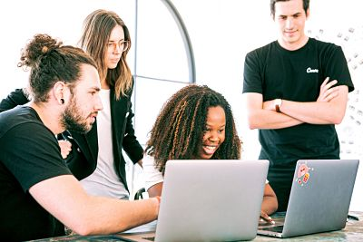

Sobre nosotros
Somos un equipo de trabajo multidisciplinario especializado en tecnologías 4.0 cuyos miembros se destacan en distintos ámbitos de la informática. Brindamos nuestras habilidades para el desarrollo y gestión de proyectos de la misma cooperativa o de empresas que requieran nuestros servicios, promoviendo así el empleo de las tecnologías mencionadas en ámbitos académicos, públicos y privados. Junto con el Centro de Graduados de la Facultad de Ingeniería, contribuimos en la formación de profesionales que desean emplearse en áreas de IT.